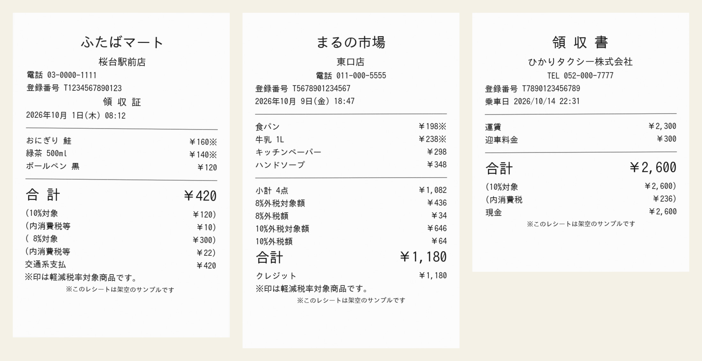
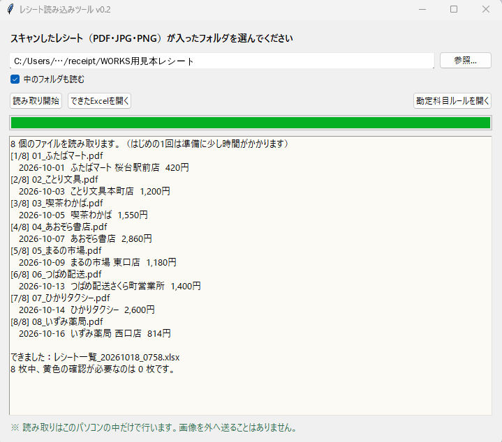
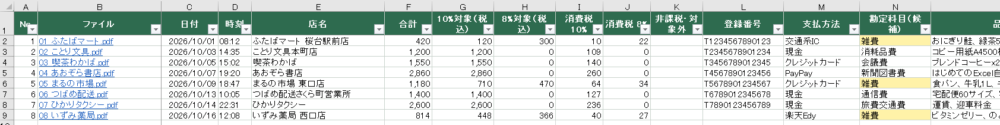
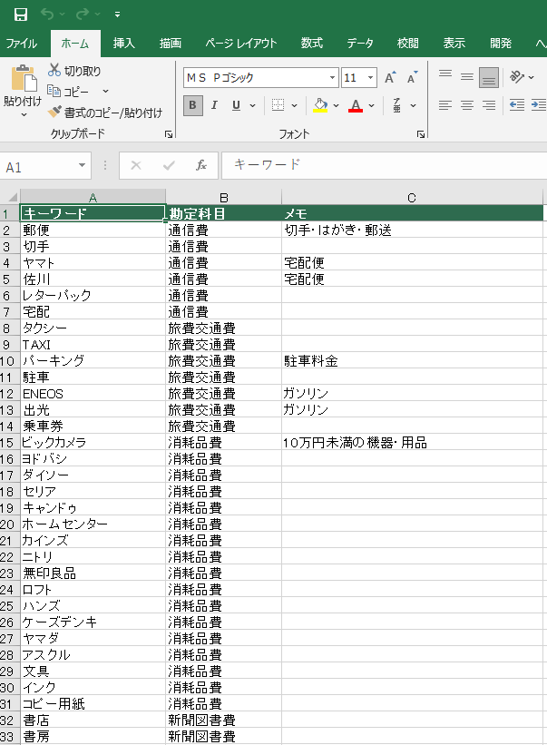

想定した依頼
「経費のレシートを毎月数十枚、手で入力している。日付・金額・8%と10%の内訳・勘定科目を一枚ずつ打つのが大変で、打ち間違いも心配」
作ったもの
スキャンしたレシート（PDF・画像）のフォルダを選んでボタンを押すと、次のものをExcelにまとめます。
- 1枚1行の一覧：日付・時刻・店名・合計・10%/8%の対象額と消費税・登録番号（インボイス）・支払方法・勘定科目の候補・主な品目
- 年月×勘定科目の集計表（式なので、一覧を直すと自動で計算し直されます）
- 読み取りに自信がない欄は黄色。ファイル名を押すと元のレシートが開くので、その場で見比べて直せます



工夫した点
- 合計を4か所から確かめる：「合計」の行だけでなく、税率別の金額・支払額・お預りとお釣りを突き合わせて、合っている金額を採用します。合わないときは黄色で知らせます。
- レシートを外に出さない：文字の読み取りはパソコンの中だけで行います。お客さまのレシートをインターネットのサービスに送らないので、個人情報や取引先の情報も安心して扱えます。
- 実物のレシートで鍛えた：コンビニ・スーパー・ドラッグストア・郵便局・ホテルなど、実際のレシート43枚で試して直しました。外税と内税のちがい、割引の行、0円のクーポン利用、キャンペーンの日付など、取り違えやすいところに対応しています。
規模と制作時間
- レシート43枚を 約2分 で一覧に（1枚あたり約3秒）。黄色で確認が必要だったのは4枚（納品書・印字のかすれ・税率の書いていないギフトカードなど）
- 読み取る項目：11（日付・時刻・店名・合計・税率別の対象額と税額・非課税・登録番号・支払方法・勘定科目・品目）
- 制作：仕組みの検討から完成まで 約1時間（AIと一緒に作成し、実際のレシートで動作確認）
こんなご依頼にも対応できます
- レシート・領収書・請求書の入力を自動にしたい、または入力作業を代わりに引き受けてほしい
- 会計ソフトに取り込めるCSVの形で出したい（列の並びを合わせます）
- 紙やPDFの帳票から、決まった項目だけを抜き出して表にしたい
注意
画面に出ているレシートと店名・数字はすべて架空のサンプルです。
勘定科目は「候補」です。最終的な判断は、経理のルールに合わせて人が確認します。